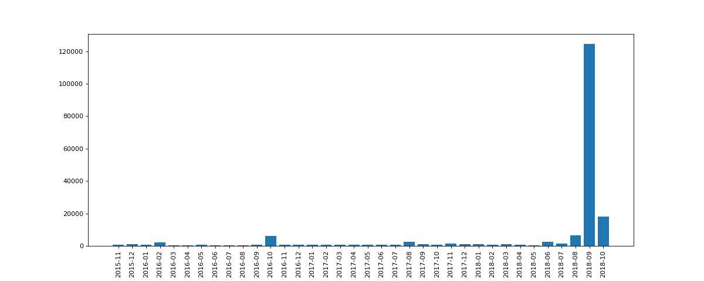
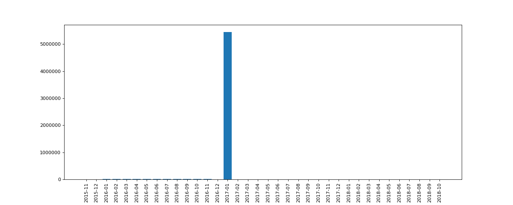

Welcome to a temporal visualisation of wikipedia graph subparts. In this page you will be able to visualize the user activity across multiple wikipedia page that have been regrouped under categories.
This dataset is composed by every wikipedia pages that are at depth 2 from disease wikipedia page.
This dataset is composed by every wikipedia pages that are at depth 2 from XX century wikipedia page
This dataset is composed by science pages that are part of wikispedia dataset
To further explore our datasets, we will try to analyse activity comportements on Wikipedia.
Let's first observe the activity of Maladie de Sanfilippo in french wikipedia.
We can see on this temporal analysis that the activity of Sanfilippo wikipedia page is 24 times higher on September 2018 than in average. The explanation behind this very high sudden activity is that on September 17, a TV film Tu vivras ma fille was broadcasted by one of the main French TV broadcaster TF1, and that the main character had this disease.
Let's now take a look at english wikipedia page 1996 in music where we also observe a peak of activity.
From this activity analysis, we can see the activity of 1996_in_music page on January 2017 is of 5.447.653 views (34 times the average activity), so the phenomenon is simillar to Sanfilippo disease but here the explication is unknown. One supposition is that because we are on english wikipedia interpretability is harder.